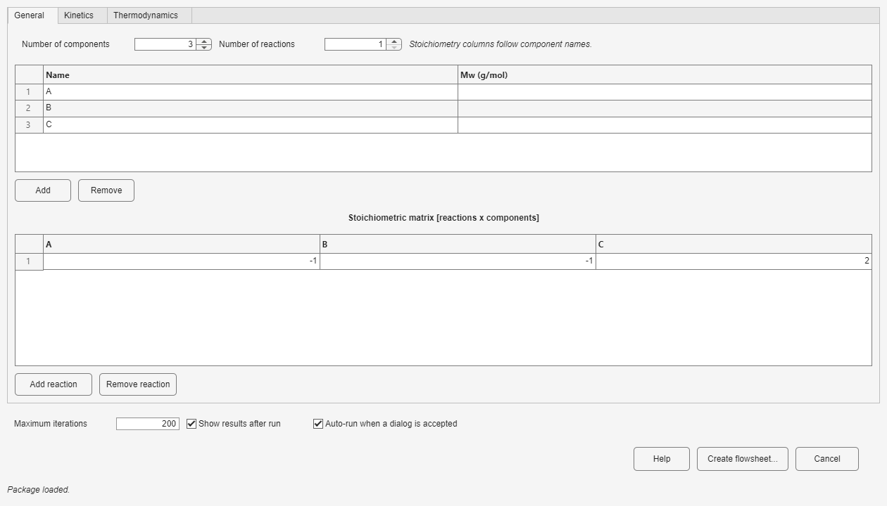
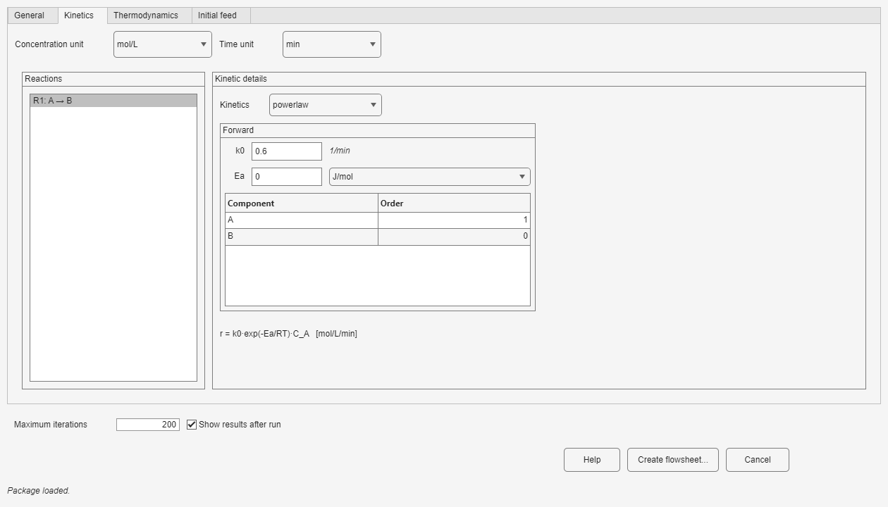
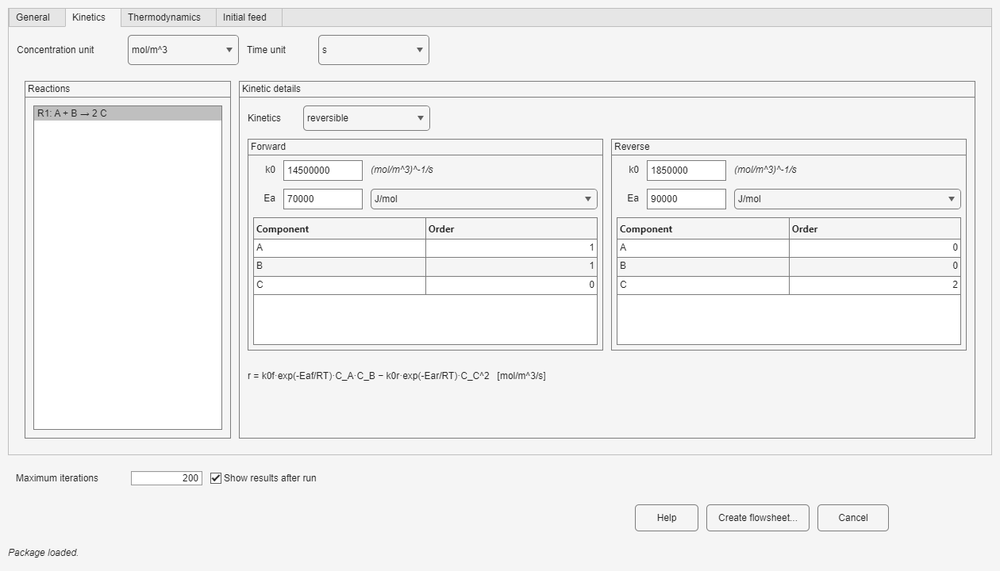
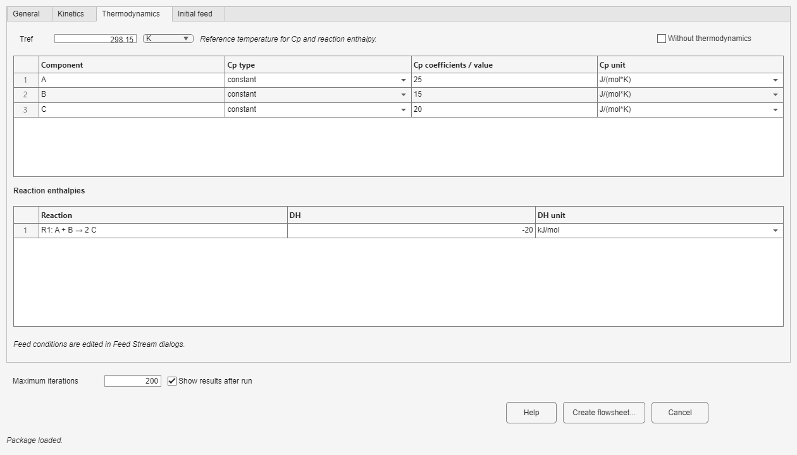

Use the tabs in order so every block shares the same component list, reaction data, and thermal basis.
List the component order, balanced reactions, kinetic basis, and thermal data you intend to use. Every Stream and reaction follows the component order entered here.
Set Number of components and Number of reactions. Enter component names and molecular weights, then fill the stoichiometric coefficients. Component order is shared by every stream and reaction, so keep it consistent.

Select a reaction and choose powerlaw, reversible, or expression. For power-law kinetics, enter k0, Ea, and one order per component. Reversible kinetics adds the reverse values and orders. Expression kinetics provides an editable rate-expression field. The concentration and time selectors determine the displayed units, while Rate equation previews the current selection.


The Ea check compares the forward and reverse activation-energy difference with the reaction enthalpy. Treat a warning as a sign or data-consistency check, not as a replacement for engineering judgment.
Enter constant or polynomial heat capacities, reaction enthalpies, and the reference temperature. Select Without thermodynamics only for a deliberately isothermal material-balance model. Adiabatic reactors, heat-exchange reactors, Heater/Cooler, and Jacket require thermodynamic data.

The bottom row is available from every tab. Maximum iterations limits stationary iterations, including Recycle and Adjust convergence. Show results after run opens the results window after a successful run. Help opens this guide. When editing an existing model, Show results opens the latest results without rerunning.
In a block window, Apply checks and saves the visible specifications while leaving the window open, OK does the same and closes it, and Cancel discards changes. These buttons never calculate the whole flowsheet. Press Run in the model when you are ready to calculate it.
Apply the definition, then configure each Feed and material Stream using the exact component order defined here.